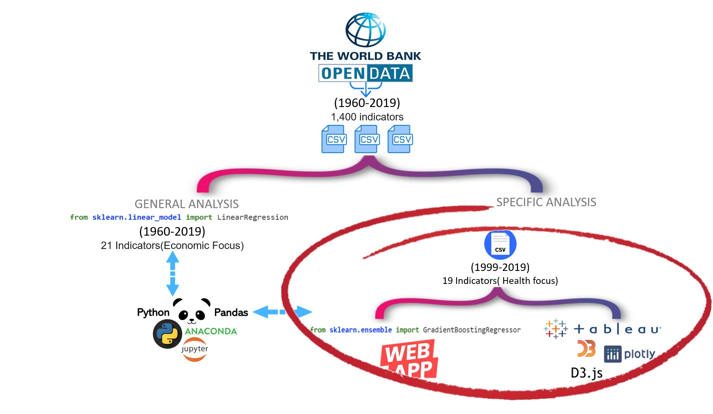

Can we correctly predict life expectancy?
And, if so, which features are most relevant for prediction?
Context / Motivation
We are curious analyze the life expectancy, because it is a key metric for assessing population health.
Data Collection / ETL
With 1,345 indicators across 20 categories for 60 years, the World Bank Data Bank is an invaluable resource to help us explore insigns about the life expectancy.
Filtering /
The primary World Bank collection of development indicators, compiled from officially-recognized international sources. It presents the most current and accurate global development data available, and includes national, regional and global estimates.
OUR WORK_FLOW
This project leverages the World Data Bank’s Development Indicators dataset, which contains development indicators for 214 countries and territories, along with 33 aggregate country groupings (e.g. world, regions, income levels).
THE DATA
While the orginal datasets are fairly clean, there are missing data for several years for some metrics, and large gaps for specific counties. The dataset used for this project is a slightly transformed version of the raw files available here to facilitate analytics.
Furthermore, using this updated dataset, we will create a machine learning model in an attempt to forecast a more accurate prediction of life expectancy based on these indicators.
MACHINE LEARNING
(2 MODELS)
We used Linear Regression as exploratory starting point to analyses the original data (1960-2019). The idea is infer causal relationships between the independent(life expectancy) and dependent variables( mostly economic indicators).
As the data consisted of hundreds of indicators, we filtered down the data by identifying 19 key indicators that we felt were most applicable, as well as the range of years we wanted the data to represent(1999-2019). For this data set we apply Gradient Boosting Regressor.
INSIGHTS/APP
Using Tableau and D3.js we create insightful and impactful visualizations in an interactive and colorful way to extend the analysis of the life expectancy.
Finally we build and deploy a interacting machine learning Model(Gradient boosting Regressor) to predict life expectancy based in the last 20 years of the dataset (1999-2019) and ours 19 key indicators.
OUR_ANALYSIS
This project leverages the World Data Bank’s Development Indicators dataset, which contains development indicators for 214 countries and territories, along with 33 aggregate country groupings (e.g. world, regions, income levels).
GENERAL ANALYSIS
Inferential statistics & analysis
First, let’s explore the commonly-assumed relationship between life expectancy and economic prosperity. Using the income level classifications in the data, we plot the life expectancy trends from 1960 to 2019 for the high, middle, and low income, as well as the life expectancy trends for the world.
SPECIFIC ANALYSIS
Gradient Boosting Regressor
Machine learning technique for regression, classification and other tasks, which produces a prediction model in the form of an ensemble of weak prediction models, typically decision trees.
In this case we have sought to collate a more rounded dataset(from 1999-2019) which considers 19 social, economic, mortality and health-related indicators in which we considered to be essential for the calculation of life expectancy
THE TEAM
I can do a PHD in D3.js!
I am a graduate in Applied Mathematics, currently undertaking a Data Analytics certificate through Monash University.I have undertaken many applied statistics units as part of my degree.
 Callum, — D3.js / Tracing / Evaluation
Callum, — D3.js / Tracing / Evaluation
I enjoy to work with the world bank datasets!
As an International Relations and Journalism graduate, My vision is to analyse, visualise and present data and bring relevant stakeholders together, to create an environment for better evidenced based decision making.
 Nicklaus, — D3.js / Documentation / Tracing / Story telling
Nicklaus, — D3.js / Documentation / Tracing / Story telling